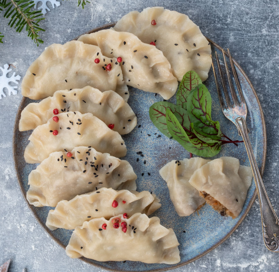

Porcje: 30-40 pierogów
– 0,5 kg mąki pszennej: typ 450 do 550
– 60 ml oleju roślinnego (rzepakowy, słonecznikowy)
– płaska łyżeczka soli
– 200 ml wody o temperaturze 70-80 st C (jeśli nie macie w czajniku opcji ugotowania wody o tej temperaturze ugotujcie tradycyjnie do 100 st C i przestudźcie przez 3-4 minuty)
Składniki farsz:– 30 g suszonych grzybów
– 300 g kapusty kiszonej
– ½ cebuli
– sól
– pieprz
1.Ciasto: Do miski wsyp mąkę, dodaj olej i sól. Partiami dolewaj wodę, miksując ciasto mikserem ze spiralną końcówką, do momentu kiedy ciasto będzie jednolite i elastyczne, ale nie klejące. Musisz wyczuć te moment, dlatego wodę należy dodawać stopniowo, bo może się jej okazać zbyt dużo. Ciasto odstaw na 10 minut aby odpoczęło.
2.Farsz: Grzyby namaczaj w gorącej wodzie co najmniej przez całą noc. Następnie gotuj je w wodzie około 10-15 minut, aż zmiękną.
3.W czasie gotowania grzybów przygotuj pozostałe składniki. Cebulę drobno posiekaj, kapustę także możesz posiekać drobniej.
4.Na odrobinie oleju podsmaż cebulę – wystarczy, by się zeszkliła. Dodaj do cebuli pokrojone na mniejsze kawałki ugotowane grzyby oraz kapustę i zalej 1 szklanką wody. Możesz wykorzystać także wodę z gotowania grzybów, będzie jeszcze lepsze.. Gotuj kapustę przez 20-30 minut, aż wszystko zmięknie i woda wyparuje. Dopraw solą i pieprzem. Na koniec możesz jeszcze posiekać nieco farsz aby łatwiej nadziewało się pierogi.
5.Pierogi: Rozwałkuj ciasto partiami na blacie podsypanym mąką. Wycinaj koła za pomocą na przykład szklanki lub dedykowanej obręczy do pierogów.
6.Dodawaj do środka farsz i zawijaj. Nie wiesz jak to robić? Zobacz mój wpis o tym jak lepić pierogi na kilka sposobów.
7.Pierogi gotuj we wrzącej wodzie z drobiną oleju przez kilka minut, do momentu wypłynięcia. Jeśli robisz je wcześniej mam idealny patent na to aby się nie sklejały. Wystarczy że ugotowane pierogi rozłożysz luźno na blacie lub silikonowej macie aby obeschły z każdej strony. Dopiero wtedy ułóż je w naczyniu do przechowywania lub zamrażaj.
